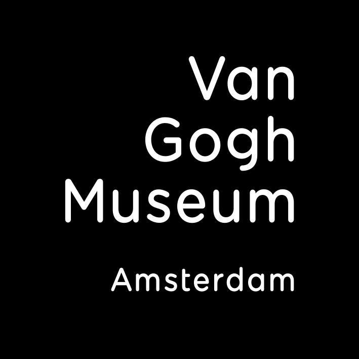

Van Gogh’s Museum

מוזיאון ואן גוך באמסטרדם מוקדש לחייו וליצירותיו של וינסנט ואן גוך.
במוזיאון מוצגים ציורים מפורסמים, רישומים ומכתבים שלו, והוא מאפשר למבקרים
להכיר טוב יותר את חייו, את סגנון האמנות שלו ואת ההתפתחות שלו כאמן.